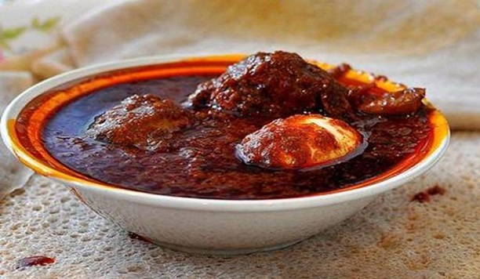

Doro Wot

Description
Doro Wot, often referred to as the "King of Ethiopian Dishes," is a rich and flavorful chicken stew that is a staple in Ethiopian cuisine. Made with slow-cooked chicken, a blend of spices, onions, garlic, ginger, and the signature berbere spice mix, Doro Wot is known for its deep, complex flavors. Traditionally served with injera, a spongy sourdough flatbread, and hard-boiled eggs, this dish is a favorite for celebrations and gatherings.
Doro Wot takes time and care to prepare, but the result is a hearty, spicy, and aromatic stew that will transport your taste buds straight to Ethiopia. Perfect for sharing with family and friends, Doro Wot is a dish that brings people together.
Ingredients
- Chicken: 1 whole chicken, cut into 8-12 pieces (traditionally with skin removed and cleaned with lemon and salt)
- Onions:4-5 large red onions, finely chopped
- Niter Kibbeh: 1/2 cup (clarified spiced butter can be replaced with regular butter or oil if not available)
- Berber: 3-4 tablespoons (Ethiopian spice blend made from chili peppers, garlic, ginger, basil, korarima, rue, ajwain, nigella, and fenugreek, among others)
- Garlic: 4-5 cloves, minced
- Ginger: 1-2 tablespoons, minced or grated
- Tomato Paste: 2 tablespoons
- Chicken Broth: 2-3 cups (or water)
- Salt: to taste
- Black Pepper: to taste
- Lemon Juice: 2-3 tablespoons (for cleaning the chicken and adding a slight tang to the stew)
- Hard boiled eggs: 4-6 eggs (peeled,optional but traditional)
- SPices(optional):
- Cardamom: 1/2 teaspoon
- Fenugreek seeds: 1/2 tablespoons
- Korarima (Ethiopian cardamom): A pinch (if available).
Steps
- Preparation:
- Clean the Chicken
- Cut the whole chicken into pieces (8-12).
- Rub the chicken pieces with lemon juice and salt to clean and tenderize.
- Rinse well with water and set aside.
- Prepare Ingredients:
- Finely chop the onions.
- Mince the garlic and ginger.
- Prepare hard-boiled eggs by boiling them, peeling them, and setting them aside.
- Cooking:
- Caramelize the Onions:
- In a large, heavy-bottomed pot or skillet, heat the pan over medium heat (traditionally, onions are cooked without oil initially).
- Add the finely chopped onions and cook on low heat, stirring frequently until they become soft and light brown. This may take around 15-20 minutes. Ensure they do not burn.
- Add the Niter Kibbeh:
- Once the onions are caramelized, add the niter kibbeh (or regular butter/oil if not available).
- Stir well to combine and let the onions cook for another 5-7 minutes, allowing the butter to meld with the onions.
- Add Berbere and Other Spices:
- Add 3-4 tablespoons of berbere spice blend to the mixture.
- Stir continuously and cook for about 5-10 minutes, allowing the spices to blend and develop their flavor. Add a little water if the mixture becomes too dry.
- Incorporate Garlic and Ginger:
- Add the minced garlic and ginger. Stir and cook for another 3-5 minutes until fragrant.
- Add Tomato Paste:
- Mix in 2 tablespoons of tomato paste and cook for another 5 minutes, ensuring all ingredients are well combined.
- Add Chicken Pieces:
- Place the chicken pieces into the pot, turning them to coat well with the spice mixture.
- Cook for 10-15 minutes, occasionally stirring to ensure the chicken is well covered with the spice mixture.
- Add Broth and Simmer:
- Pour in 2-3 cups of chicken broth (or water) to cover the chicken.
- Add salt, black pepper, and any additional spices (like cardamom, fenugreek, and korarima).
- Cover and simmer on low heat for about 45 minutes to 1 hour, or until the chicken is fully cooked and tender.
- Add Hard-Boiled Eggs:
- Add the peeled hard-boiled eggs to the stew in the last 10-15 minutes of cooking.
- Make small slits in the eggs so they can absorb the stew flavors.
- Finish and Adjust Seasoning:
- Taste the stew and adjust seasoning with more salt or spices as needed.
- Let it simmer uncovered for the last few minutes to thicken the sauce if desired.
- Serve:
- Serve Doro Wot hot with injera (Ethiopian flatbread), rice, or bread.
- Garnish with fresh coriander or parsley, if desired.